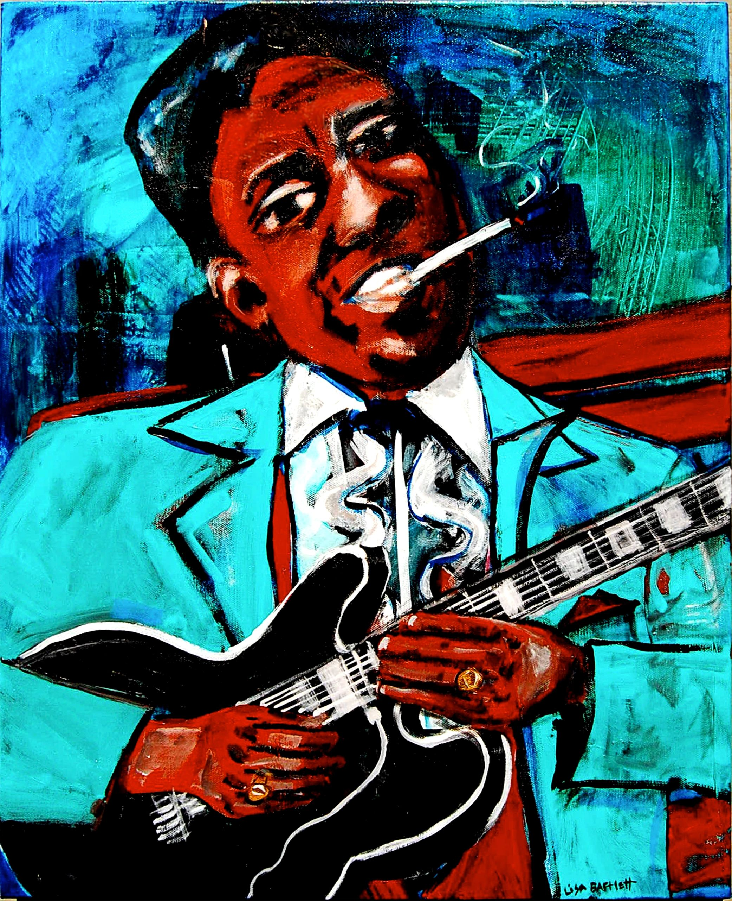
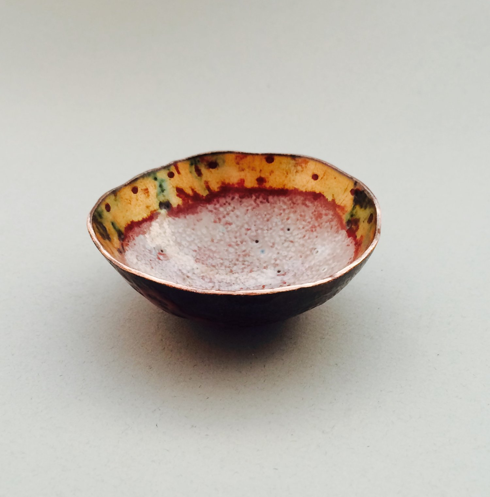
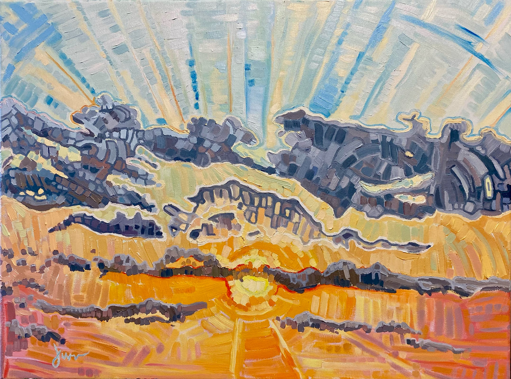

Lisa Bartlett is well-known in Columbia, Missouri. Besides running the Artlandish Gallery, which features dozens of local and regional artists and craftspeople, she's also the art director for the Roots n Blues Festival in Columbia. She is known for her mixed media pieces that typically feature bold color and paint strokes.
A piece from Lisa Bartlett's upcoming collection titled Music Themes.A Columbia jeweler and metalsmith, Theresia St. Vrain is the owner and operator of St. Vrain Metals. Aesthetically, she emphasizes clean lines and refuses to be reliant on mass production. She makes a variety of jewelry, including necklaces, rings, and bracelets, as well as "vessels," a small handmade bowl.
Landscapes and other forms of nature inspire this artist. By using a variety of intense colors, Van Cleve tries to create a striking interpretation of the landscape that emotionally impacts the viewer. In his opinion, a painting should be "done right the first time." He doesn't do any reworking or blending.
